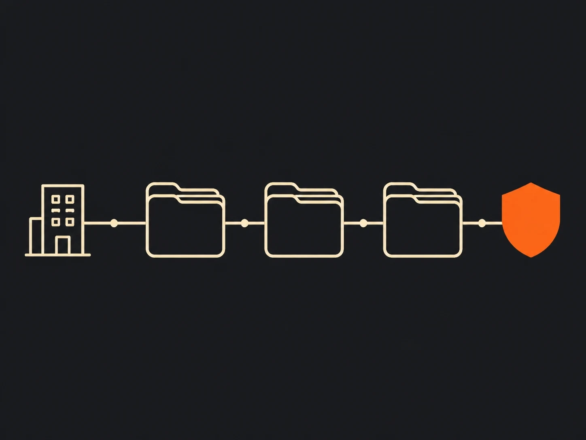

These figures are illustrative commercial and property-management benchmarks from SW Recovery's recovery benchmark page and its fee structure guide, not guaranteed residential-rent outcomes.
In-house collections are cheapest only on paper
In-house collection looks inexpensive because there is no outside invoice, but the real cost shows up in staff time, delayed escalation, and balances that age while operations teams are busy with leasing and resident service. Industry benchmark pages do not prove residential-rent results, but they do show the direction clearly: older debt tends to recover at far lower rates than fresh placements (SW Recovery benchmarks).
That matters for every team running property management collections internally. If the same staff who need to fill units and resolve maintenance issues are also chasing aged receivables, the hidden cost is not just payroll. It is the opportunity cost of letting a balance slide from a live resident conversation into a cold recovery file. That is why the next question is not whether in-house effort has value. It is where that value stops.
Fresh balances belong with the property team first
In-house collections are strongest at the beginning of the delinquency curve, when context and relationship still matter more than specialized recovery process. A property team already has the ledger, lease, payment history, and resident communication trail in front of it, which is why current or recently-late balances are often handled best through ordinary rental collection services and property operations rather than immediate third-party placement.
- The resident relationship is still active, so reminders and payment plans can resolve the balance without formal recovery escalation.
- Staff can verify ledger details immediately and correct errors before they become disputes.
- Managers can align recovery with retention goals for active residents and owners.
That is the logic behind keeping fresh accounts in-house even when a portfolio also works with a collection agency for landlords or a collection agency for property managers. The mistake is assuming the same playbook still works once the resident has gone silent, moved out, or left a damaged ledger behind. At that point, the economics and the workflow start to change.
Outsourced recovery changes the economics on aged accounts
Outsourcing matters because it converts aged-account follow-up from a fixed internal workload into a specialist process that is usually priced against results. In the most common contingency model, the agency keeps an agreed share of dollars actually recovered and earns nothing when nothing is collected, which aligns the agency's upside with the owner's recovery outcome (SW Recovery fee structures).
That does not mean every outsourced agreement looks identical. Some agencies also offer flat-fee pre-collection work, minimum placement terms, or pass-through litigation costs depending on the account stage and the contract, so the right comparison is net recovery after all fees and handoff friction. This is the operational case for outsourcing rent collections: not outsourcing for its own sake, but placing the balances that need skip tracing, disciplined outreach, dispute handling, and documented recovery steps that an internal team is not built to run every day.
Account age is the real comparison point
The honest comparison is not one blended recovery number. It is a timing decision about which team handles the account at each stage. SW Recovery's industry page shows a steep age curve in commercial collections and an illustrative 20 to 40 percent range for property-management accounts, which is directionally useful but not a guarantee for residential rent (SW Recovery benchmarks).

Put differently, in-house and outsourced recovery are not trying to win the same moment of the lifecycle. In-house effort is best at early intervention. A specialist agency is supposed to outperform on accounts that are older, harder to reach, post-move-out, or already on the path toward move-out recovery and judgment collection. That is why the comparison table should be organized around account stage rather than ideology.
| Dimension | In-house collections | Outsourced specialist agency |
|---|---|---|
| Best-fit accounts | Current and recently-late rent with an active resident relationship | Aged, delinquent, disputed, skip-trace, and post-move-out balances |
| Primary advantage | Context, speed, relationship, and direct ledger access | Process discipline, contact infrastructure, and scaled recovery focus |
| Cost model | Fixed staff time regardless of outcome | Usually contingency-based, with terms varying by age, balance, and service level |
| Recovery on aged debt | Often deteriorates because accounts wait behind operating work | Designed to recover balances that would otherwise be written off or neglected |
| Compliance burden | Property team still carries its own state-law, lease, and practice risk | Third-party debt collection triggers FDCPA and Regulation F duties for covered collectors |
| Reporting and escalation | Internal notes and spreadsheets, if maintained | Structured account-status reporting and documented escalation path |
The handoff line is also a compliance line
Compliance is not a side issue in this decision. The FDCPA is built around the statutory definitions in 15 U.S.C. 1692a, which distinguish creditors from debt collectors, and Regulation F is the CFPB's implementing rule for covered debt collectors under 12 CFR Part 1006.
That means a property team collecting its own debt in its own name is not standing in exactly the same legal posture as a third-party agency. Once an account is placed with a third party, though, the operational rulebook becomes much more explicit: validation information generally has to be provided during the initial communication or within five days after it, including creditor and amount details (CFPB consumer guidance; 12 CFR 1006.34). The CFPB also explains that covered collectors are presumed to violate the law if they call more than seven times in seven days about a particular debt or within seven days after a phone conversation about that debt (CFPB call-frequency guidance).
Electronic outreach is now part of that same framework. The eCFR commentary to Regulation F requires a clear and simple opt-out method when a covered debt collector communicates by email or text to a specific address or number (eCFR commentary on 1006.6(e)). That is why FDCPA and Regulation F compliance is not just a talking point when you evaluate a vendor. It is part of deciding who should touch which accounts and when.
A hybrid workflow usually beats an all-or-nothing model
Most portfolios do best with a staged workflow rather than a pure in-house or pure outsourced model. Current rent, early reminders, and active-resident payment plans stay with the property team, while aged, move-out, eviction-cost, and harder-to-locate accounts move into a specialist channel built for recovery and compliance.
In practice, that often means fresh balances stay inside rental debt collection operations, post-move-out files move into move-out debt collection, and owner-sensitive balances such as damages or legal costs are handled under the right specialty lane, including eviction cost recovery or a broader asset-manager recovery program. The workflow matters because it keeps staff working the balances they can realistically solve and hands off the balances that need persistence, tracing, or formal collection controls.
That staged approach also makes vendor evaluation easier. If an agency cannot explain how it reports status, handles disputes, respects contact rules, and coordinates with the property team, it is not really offering a workflow. It is just offering another inbox. The next step is deciding when that handoff becomes worth it financially.
Outsourcing pays when aging, write-offs, and staff time pile up
Outsourcing starts to make financial sense once internal follow-up is no longer the highest-return use of staff time and account age is actively working against recovery. There is no universal threshold, but the pattern is usually obvious before the spreadsheet says so.
- Balances regularly sit past 60 to 90 days before serious follow-up begins.
- Move-out and eviction-related balances are being written off instead of worked through a documented recovery path.
- Leasing or property staff are spending meaningful time on chasing debt instead of filling units and serving residents.
- You need better reporting, dispute handling, or multi-state compliance discipline than the property team can carry alone.
When those conditions show up, the contingency math often favors placement because some net recovery on a deteriorating balance beats carrying fixed staff cost against a balance that keeps aging. That is the decision behind whether landlords should hire a collection agency and what happens after unpaid rent is placed. A lower fee percentage alone is not the decision; the useful comparison is which option leaves the owner with the better net result after recovery, fees, compliance risk, and staff diversion are all counted.
For most property teams, the answer is not to stop using internal collections. It is to stop asking internal collections to solve the wrong part of the lifecycle. That is the central reason a hybrid model tends to outperform a winner-take-all one.
Four questions to check what stuck. Answers are graded instantly, and nothing is saved or sent anywhere.
1. Which balances are usually the best fit for in-house collections?
2. Why does account age matter so much in this decision?
3. What does a contingency agency fee usually mean?
4. What changes once a third-party debt collector is involved?
Frequently Asked Questions
-
Can you outsource only some accounts and keep the rest in-house?
Yes. Most portfolios keep current billing and early, in-lease reminders in-house and place aged, disputed, skip-trace, or post-move-out balances with an agency. The practical decision is usually which accounts should move, not whether every account should move.
-
When should a property team stop working an account in-house?
There is no universal day-count that fits every portfolio, but the handoff conversation usually starts once balances are aging past 60 to 90 days, a resident has moved out, contact information is failing, or staff time is exceeding the likely recovery upside. Delay matters because industry benchmark pages show recovery probability falling sharply as debt ages.
-
How is a collection agency usually paid on contingency?
A contingency agreement usually means the agency keeps an agreed percentage of dollars actually recovered and earns nothing on accounts with no recovery. Some agencies also offer pre-collection flat-fee work, minimum placement requirements, or pass-through legal costs, so the comparison to make is net recovery after fees, not just the headline percentage.
-
Does outsourcing mean the FDCPA and Regulation F apply?
The federal analysis changes when a third-party debt collector is involved. The FDCPA is built around the statutory definition of a debt collector in 15 U.S.C. 1692a, and Regulation F implements those rules for covered debt collectors, including validation information, call-frequency presumptions, and electronic opt-out requirements. First-party property staff still need to watch state law, lease terms, and unfair-practice risk, but the Regulation F rulebook is aimed at debt collectors.
-
Does outsourcing mean losing visibility or control over accounts?
It should not. A serious agency should give placement-level reporting, status notes, recovery tracking, and a documented escalation path so the property team can see what is happening without spending internal staff hours on every contact attempt.
-
Will outsourcing automatically hurt resident relationships?
Not automatically. Fresh, in-lease balances are often best handled by the property team precisely because the relationship is still active. By the time an account is aged or post-move-out, the relationship question usually shifts from retention to compliant recovery, documentation, and reputation protection.
-
Are industry recovery percentages a guarantee for residential rent portfolios?
No. The percentage ranges cited in this article are illustrative industry benchmarks, with several drawn from commercial or broader property-management sources rather than guaranteed residential-rent outcomes. Actual results depend on debt age, documentation quality, account balance, debtor circumstances, state law, and how quickly the account is placed.
-
What should a property manager compare before choosing an agency?
Compare net recovery, fee structure, licensing footprint, tenant-debt compliance controls, dispute handling, reporting cadence, and how the agency manages move-out, eviction-cost, and post-judgment accounts. A lower percentage fee is not automatically the better economic choice if recovery performance or compliance discipline is weaker.
If your portfolio is still debating whether every account should stay in-house or every account should be outsourced, the better framing is simpler: match the account stage to the team built to recover it. That is how properties protect resident relationships early, stay disciplined on compliance later, and stop letting aging debt make the decision for them.